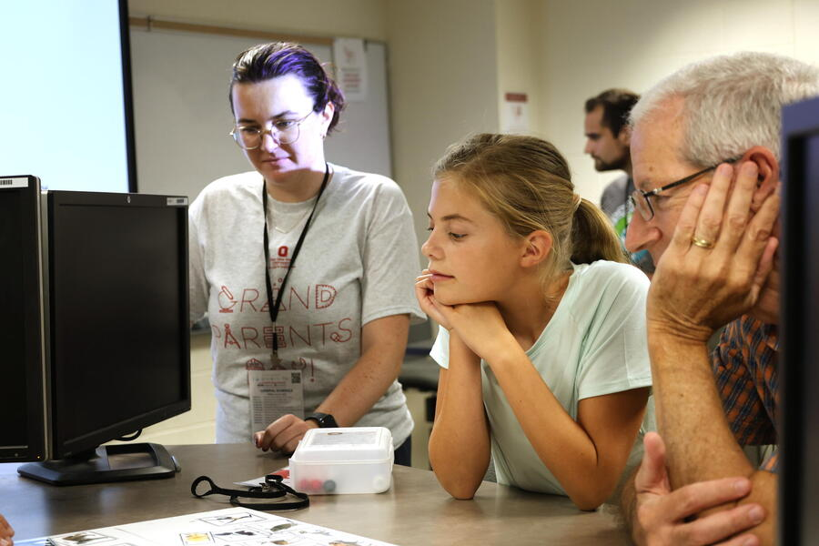

Surrounded by a table full of cards depicting animals from across the tree of life, two children and their grandparents debated a question at the heart of modern biology: What traits define a species?
That question was the focus of AI Spy with my Little Eye Something Wild, a hands-on activity led by Imageomics Institute researchers during The Ohio State University College of Engineering’s annual Grandparents Day. Designed for alumni and their grandchildren, the event offered a chance to explore how engineering and artificial intelligence are shaping the study of nature.
“Furry” and “eats meat” turned out to be the most successful trait pairing of the day—with the Persian cat taking the win in a closely contested game that included whales, raccoons, and even polar bears.
“This exercise reflects real challenges in biology,” said Matthew Thompson, PhD, of the Imageomics Institute. “When scientists look at species, they’re trying to understand how physical and behavioral traits connect across evolution—and how we can use AI to detect those patterns at scale.”
Thompson urged them to truly think about the differences in all the animals, and the similarities. Would a polar bear eat blueberries? Is being cute and fluffy a trait? How does the Chihuahua or raccoon fit into all of this?
Imageomics researchers use tools like BioClip2, a deep learning newly-launched model trained on over 2 million animal images, to identify traits in wildlife imagery. The technology allows researchers to infer ecological characteristics, monitor biodiversity, and assist conservation efforts by automating what would take decades of human labor. With support from the National Science Foundation, BioClip’s training time has been reduced from nearly 20 years to just 10 days.
“It’s a leap in what we can learn from visual data,” said Jenna Kline, PhD, who also helped lead the session. “And it starts with helping people—especially students—understand how traits define the living world.”
Gary Ash, a retired mechanical engineer and Ohio State alumnus, attended the session with his grandson Ethan.
“My grandson lives up in Cleveland and I live down in Wooster,” he said. "I brought his cousin last year and I wanted Ethan to have the same experience. I’m hoping to nudge him toward engineering. He’s very inquisitive, especially with his grandpa."
Civil engineering alumnus Joe Morbitzer brought his granddaughter Ava.
“I wanted to expose my granddaughter to different STEM sessions, different science programs," he said.
For both families, Grandparents Day provided more than just memories—it offered a glimpse into the future of science, where engineering, ecology, and AI come together in service of understanding life on Earth.
After all, Ash joked, when he graduated from Ohio State it was "just after the Civil War."